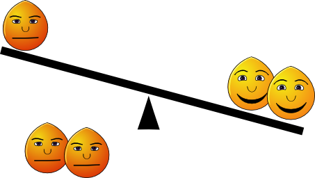
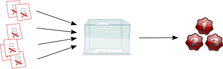
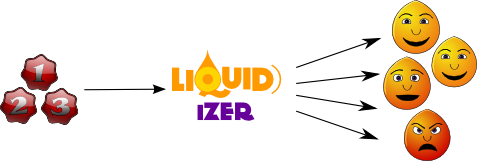

A lot of research has been spent on the process of decision making in large groups. While we easily find widely accepted solutions within groups of friends, the process somehow does not scale up to larger and more distant groups of individuals.
An often suggested approach of decision making in hierarchy-free organizations is found in a democratic vote. However, voting is known to produce suboptimal and disfactory solutions for the group if it is applied without a deep understanding for the values of the other side.
More often than not, we will end up in a situation where a majority overrules a minority in an issue without high involvement or with only superficial information. At the same time, a minority group of specialists might be overruled. A large amount of unhappiness is created without a corresponding benefit.
A majority is only lightly involved, while a minority is harshely overruled.
We will all end up at being within the minority group of specialists sooner or later. Wouldn't we all be better off if we abstained from voting when we are not directly affected or are just not as informed about the issue as we could be? Knowing when to vote cooperatively is a major problem in large groups. Each time such an opportunity is lost, potential happiness is wasted.

A cooperative majority steps down from voting. They accept a minor degree of dissatisfaction in favor of some crucial minority interests.
The Liquidizer voting platform goes a new path of the decision making procedure. It can act as a traditional vote counting engine, if that feature is requested. But, it can do much more.

In traditional voting people secretely fill in the ballot sheet with their oppinion about an issue. The results are derived by simple vote counting schemes.
The Liquidizer is not so much about voting what you want to be the solution. Rather, you cast your votes according to what you think is good for the group. The system then gives you visual and quantitative feedback on who is affected by your suggestions. If the system is used interactively good compromises can be negotiated quickly.

The Liquidizer lets you vote on a number of issues. It gives you visual and quantitative feedback on how well it matches group interests.
The Liquidizer does certainly not provide the answer for all kinds of decision making problems. There might be situations, where you need the answer within a strict time frame and without lengthy interactive consultation. Sometimes even complete anonymity is of utmost importance.
The Liquidizer can be seen as a quantitatively supported discussion forum. Conflicts, majorities, and intensity of convictions can be visualized and therefore understood much more quickly. Yet, the system does not make a decision for you, unless you deliberately decide when and how this should happen.
You can read more on the quick introduction page.